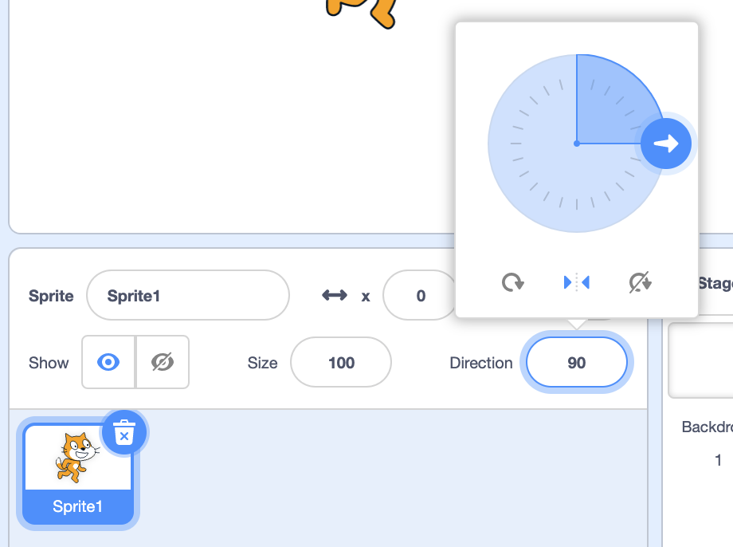

Loops
Last time
- Last time, we combined blocks that were functions, values, and conditions to make our Scratch programs ask questions and then make decisions based on the answers to those questions.
- But every time we ran our code, whether we pressed the green flag or pressed a key or clicked, each script could only run one time, from top to bottom.
Walking Cat
- Now, we’ll tell our programs to loop, or repeat some blocks multiple times.
- We’ll start with a Walking Cat example with our cat moving 10 steps when the green flag is clicked:
when green flag clicked move (10) steps - We’ll use the “forever” block in the Control section of blocks, to make our cat move over and over:
when green flag clicked forever move (10) steps- Now, our cat will move until it reaches the edge, where it can’t move any further. It will still be trying to move.
- We can click the stop sign at the top of the stage, next to the green flag, and drag the cat back to the left side of the stage.
- We’ll add another block that will tell our cat to bounce, or turn around, if it reaches the edge:
when green flag clicked forever move (10) steps if on edge, bounce- Now, our cat is upside-down when it turns around at the edge, but we can change the rotation style by clicking on the Direction dial in the Sprite panel, and selecting the second option:

- Now, our cat is upside-down when it turns around at the edge, but we can change the rotation style by clicking on the Direction dial in the Sprite panel, and selecting the second option:
- The legs of our cat aren’t moving, though, and it turns out we can make an animation, with images moving quickly enough that it gives the illusion of movement.
- It turns out that our cat has two costumes, with its legs in slightly different positions. So we can use a “next costume” block to alternate between the two:
when green flag clicked forever move (10) steps if on edge, bounce next costume - Our cat seems to be moving a bit too fast, so we’ll slow down its movement:
when green flag clicked forever move (10) steps if on edge, bounce next costume wait (0.1) seconds- Now, our cat will move, bouncing if it’s at the edge, changing to the next costume, and then wait just a fraction of a second. And it will repeat all of these blocks over and over again, until we press the stop sign.
Swimming Fish
- We’ll use the “Underwater 1” backdrop with our fish in Swimming Fish, and have it point towards the mouse cursor:
when green flag clicked forever point towards (mouse-pointer v)- By using the “forever” block, after we click the green flag, the fish will always point itself towards the mouse, over and over again.
- We can make the fish move 5 steps each time as well:
when green flag clicked forever point towards (mouse-pointer v) move (5) steps - We can use this for our backdrop, too. We can click on the backdrop in the Stage panel, and drag in these blocks:
when green flag clicked forever play sound (Ocean Wave v) until done- At first, the “play sound” block only has a “pop” sound, so we’ll use the Sounds tab to add the “Ocean Wave” sound to our backdrop. Then, we can use the dropdown in the “play sound” block to select “Ocean Wave”.
- Now, our backdrop will play the wave sound over and over again.
- Now, when we click the green flag to run our program, we’ll have multiple “forever” loops running. Our fish will follow the mouse pointer, and the backdrop will continuously play the wave sound.
- With these blocks, we can add music to our programs that play over and over, giving us a sense that something is always happening.
Pet the Cat
- We’ll remove our backdrop and fish, and add back the cat for Pet the Cat.
- Now, let’s tell our cat to play a “meow” sound when our mouse gets too close:
when green flag clicked if <(distance to (mouse-pointer v)) < (100)> then play sound (Meow v) until done- We can add a condition that checks for the distance to the mouse pointer. If it’s less than a value of 100, our cat will play a sound.
- Note that we can find the “distance to” block in the Sensing category of blocks.
- But when we run our program, nothing happens, even as we move our mouse pointer towards the cat. It turns out that our stack of blocks is running just once, and as soon as we click the green flag, it asks the question and does nothing since our mouse pointer is far away from the cat.
- By adding a “forever” block and placing our condition inside it, we can ask that question over and over again, and play a sound whenever our mouse pointer is too close:
when green flag clicked forever if <(distance to (mouse-pointer v)) < (100)> then play sound (Meow v) until done - A “forever” loop, one that runs over and over again until the end of the program, is also called an infinite loop.
Meow
- We can also use the “repeat” block to run some blocks of code a specific number of times:
repeat (10)- Notice that there’s a little arrow at the bottom right of this block, indicating that the code inside will be repeated.
- If we wanted our cat to meow three times, for example, we could use:
when green flag clicked play sound (Meow v) until done play sound (Meow v) until done play sound (Meow v) until done - But we could improve the design of our program, Meow, by using a “repeat” block, instead of using the same “play sound” block over and over again:
when green flag clicked repeat (3) play sound (Meow v) until done- This is better since we are using only two blocks, instead of three as before. And if we wanted to repeat, say, 30 times, we would only need to change the number in the oval, instead of dragging out 27 additional “play sound” blocks.
- We can use other values inside the oval for the “repeat” block as well. For example, we can ask a question, and use the answer as the input:
when green flag clicked ask [Number:] and wait repeat (answer) play sound (Meow v) until done- Now, the user of our program can control how many times our cat meows.
- We can try to get our cat to move in a circle in another example, Circle:
when green flag clicked repeat (24) move (30) steps turn right (15) degrees- Our cat will move 30 steps, turn slightly, and repeat that 24 times, moving itself in a circle.
- Before, we needed to click our blocks over and over again ourselves. Now, our cat is able to repeat all of that very quickly.
Balloon
- We’ll use a loop to make a balloon inflate itself in Balloon 1:
when green flag clicked repeat (10) change size by (10) wait (0.2) seconds end hide play sound (Pop v) until done- Now, when we click the green flag, our balloon will increase its size by 10, pause a fraction of a second. It will do that 10 times, until it gets bigger and bigger, and then disappear and play a pop sound.
- But when we click the green flag again, nothing happens. The balloon is still hidden, so we need to add some blocks to show it again:
when green flag clicked show set size to (100) % repeat (10) change size by (10) wait (0.2) seconds end hide play sound (Pop v) until done- We’ll also use a “set size” block to set the balloon back to its original size. Now, everytime we click the green flag, it will reappear.
- Since we start our size at 100, and increase it by 10 for 10 times, the balloon will pop at size 200. We can change the number of times our loop repeats to 15, and now our ballon will grow until size 250 before it pops.
- It turns out we can use another block in the Control section, “repeat until”, so we can avoid that calculation ourselves, in Balloon 2:
when green flag clicked show set size to (100) % repeat until <(size) = (200)> change size by (10) wait (0.2) seconds end hide play sound (Pop v) until done- The “repeat until” block is a combination of a loop and a condition. It will run over and over until some question is answered as “yes”, or becomes true.
- We’ll use the hexagon-shaped “=” operator in the Operators section to compare the size of our balloon, and once it’s equal to 250, our “repeat until” block will stop repeating.
- After the condition is true, the rest of our blocks will run, hiding our balloon and playing the pop sound.
- With the “forever” block, “repeat” block, and “repeat until” block, we have the ability to create loops in our program that run our code multiple times, without requiring us to click over and over again.